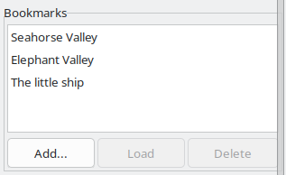
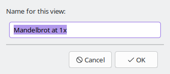

A bookmark remembers everything about a picture: the fractal, the view, the iteration settings and the colouring. The Bookmarks section of the side panel lists yours.

Bookmarks are written to a file called bookmarks.json in your application data folder, every time you add or delete one:
| Linux | ~/.local/share/Mandelbrotter/bookmarks.json |
| macOS | ~/Library/Application Support/Mandelbrotter/bookmarks.json |
| Windows | %APPDATA%\Mandelbrotter\bookmarks.json |
The file uses the same JSON as view files, one entry per bookmark, and is written through a temporary file so a crash cannot leave it half written. You can copy it to another machine or edit it by hand.
If the file cannot be read when Mandelbrotter starts (a message says so), the list starts empty, and the next Add or Delete overwrites the file. Fix or move the file first if it holds bookmarks you care about.